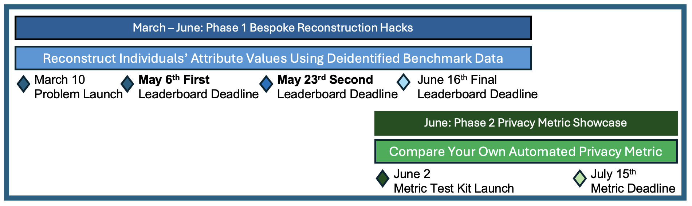
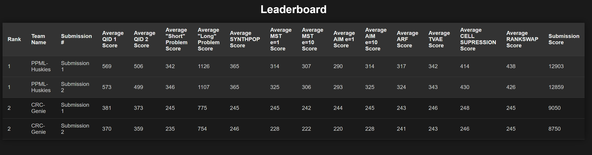
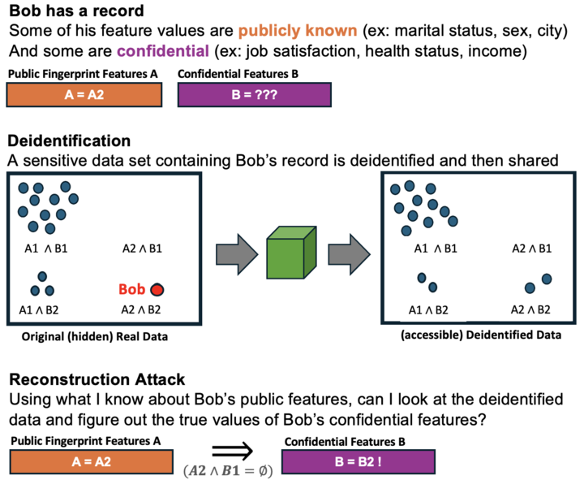
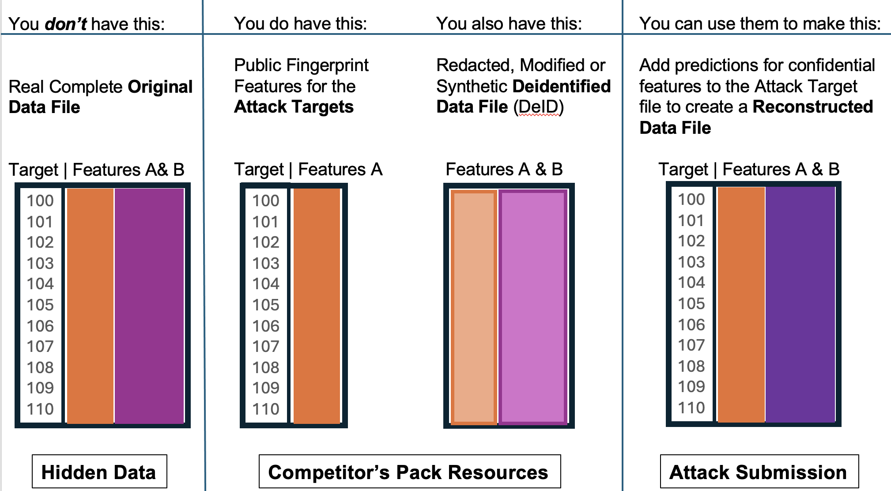
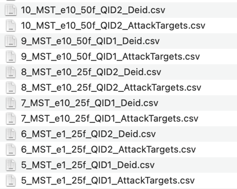
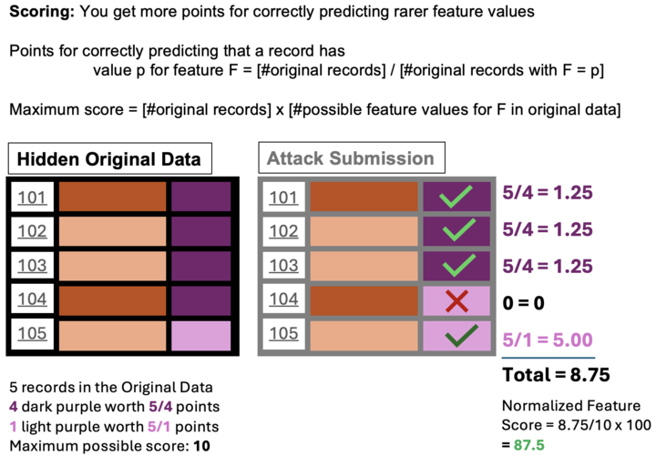

Red Team
For the past two years the CRC has been focused on the utility of deidentified data, and we've found some great performing algorithms. But are they private? In 2025 we're putting our focus on the privacy of the data. Can you hack the CRC?
Contents:
Connect with Us
Calendar
Leaderboard
Problem Statement
How to Submit
Talks and Tutorials
Connect with Us
Email, Listserve, Slack and Office Hours
Please feel free to reach out to us! We're happy to answer questions, provide tours, discuss your relevant research, etc.
2025 Red Team Calendar of Events
Teams are welcome to register at any point during the exercise and submit to any or all leaderboard updates. Participating in Phase 1 isn't required for participating in Phase 2.

Leaderboard

Phase 1 Problem Statement: Reconstruction Attacks
The premise of the Phase 1 red team exercise is that you know some information about a real individual, such as their age and city and marital status, and you know they were included in a deidentified data set that has more sensitive features, such as job satisfaction, health status, or income. You want to see if you can use your public knowledge of the individual, and the deidentified data, to figure out their exact, correct values for the confidential features you don’t know.
You might be able to do this if the deidentified data doesn’t do a great job of dedientifying Bob.

You can look at the CRC's techniques page[link] to see a variety of different deidentification techniques, and the Algorithm Summary Table in the Data & Tools tab will tell you a bit about how they perform for privacy and utility. Not all techniques perform equally well on privacy.
For instance, cell suppression is a statistical disclosure control approach that redacts outlier records based on features like age, race and sex, in order to achieve k-anonymity ensuring that no demographic category contains fewer than k individuals. But if Bob wasn’t a demographic outlier, he might not get any suppression; his original record might exist completely intact and easy to recognize in the deidentified data. Rank swapping is a different statistical disclosure control technique that shifts the values of selected numerical features, swapping them with values from neighboring records, but Bob might still be recognizable from other features.
Synthetic data methods, which train models to create entirely new records, can sometimes leak sensitive information by overfitting the original data. If only one record in the synthetic data looks like Bob, and it preserves many of Bob’s feature values, you might be able to learn a lot about Bob from that synthetic record, even if it technically isn't Bob's record. Alternatively, if several records in the data all look similar to Bob, and their confidential feature values are all similar to Bob’s too, you may be able to aggregate them to make a very good guess about Bob’s true feature values. More complex and creative attacks can involve training machine learning models to perform attribute inference attacks against a specific deidentification approach. Different deidentification methods might be more susceptable to different types of reconstruction attacks.
In this red teaming exercise, we will explore resilience against record reconstruction for a curated set of deidentification algorithms that perform reasonably well on utility. Methods include differentially private synthetic data (MST and AIM from the SmartNoise library), non-differentially private synthetic data (CART from the Synthpop library, ARF from the SynthCity library, and TVAE from the Synthetic Data Vault), and traditional statiscial disclosure control techniques (cell suppression and rank swapping from the sdcmicro library). You're welcome to use different methods to attack different problems. We also explore two different options for the "Public Fingerprint Features", or quasi-identifier features, and two different schema sizes (25 features and 50 features).
Phase 1 Research Questions:
We know that:
- Different deidentification methods provide more or less privacy
- Different public fingerprints (Quasi-identifiers) have more or less attack power for reidentifying/reconstructing records.
- Wider schemas (more features) make some attacks easier and some attacks harder.
But we don't currently know, and are hoping to learn through the first phase of this exercise:
- How should our selected deidentified methods should be ranked for privacy?
- Which of our two selected Quasi-identifiers sets has the most power and why? We've got a bet, but you'll be checking it– which one do you think is stronger?
- How will a wider schema impact the privacy properties of the deidentification algorithms and the difficulty of configuring attacks?
Competitor's Pack and Scoring:

Below is a list of the competitor pack files for Problems 5-10, exploring privacy attacks against the SmartNoise MST algorithm at different epsilon settings (e1, e10), with different quasi-identifier sets (QID1, QID2) and schema widths (25f, 50f).
Problem Files for the MST Deidentification Algorithm:

`
Instructions for Red teaming with the Competitor's Pack:
- To submit a reconstruction attack against a problem, edit the AttackTargets.csv file to append your predictions for the confidential columns for that problem (the columns that are present in the deidentified file, but missing in the attack targets file). Your submitted file should begin with the Targets column that contains the record ID's, and include the same set of columns as the Deid.csv file.
- Submit attacks for as few or as many problems as you like.
- You can leave feature values null if you don't want to make a guess for them
- The more columns you predict and the more problems you try, the higher your score will be. Even if you just guess random values.
- There will be three leaderboard updates. Get your predictions in by the deadline to be included (see calendar at the top of this page).
- You can submit once to every leaderboard update, up to three times total during the exercise. Your team's leaderboard score will be based on your best performing submission
- Problem 25 includes the full ground truth data and one deidentified data for each of our algorithms. You can practice your reconstruction techniques here before submitting.
Scoring:
In real world data some features are very skewed, such that nearly everyone has the same value. It's debatable that reconstructing (or guessing) extremely common values is really an invasion of privacy. For the leaderboard scores, we will award more points to correct predictions on more rare feature values, as shown below.

Notes on the Problem Design:
Disjoint Samples: Note that each reconstruction problem uses a different set of individuals, with different ID#'s, but all data excerpts come from uniform random samples of the same populations and have similar distributions.
Practice Data: Problem 25 includes the full ground truth data and one deidentified data for each of our algorithms. You can practice your reidentification techniques here before submitting.
Preparing for Phase II: We want this to build this work into automated empirical privacy metrics in Phase II; that's how this will help us address the problem of privacy for deidentified data in general. As you're exploring different methods, consider the impact of the fingerprint choice and the schema size on the behavior of your attack. Can you figure out how to automatically configure an empirical privacy metric to replicate the most successful attack (for any choice of quasi-identifiers) on a new data set?
How to Submit:
- Register your Team, if you haven't previously registered for the CRC (fill out the form here).
- Join our listserve (send an empty email to: CRC+subscribe@list.NIST.gov
- Download the competitor's pack
- Try as many reconstruction problems as you like (following the directions above). Note that the more you try, the higher you'll score-- even if it's random guesses.
- Go to this form to submit your reconstruction attack files to the leaderboard. The form will ask you about the methods you used, and ask if you'd like to link any libraries or references.
- You can submit one attempt for every leaderboard update, up to three times total (see the Calendar for deadlines in April, May and June).
Talks and Tutorials:
FCSM 2024 Talk
Deidentification includes any processing to microdata that produces data in the same schema and is intended to be resistant to individual reidentification. Does everything that promise to deidentify data actually do it?
This talk uses the resources of the CRC project to review a cornucopia of privacy metrics—measuring how resistant deidentified data is to attacks on membership privacy and attribute privacy, and how well it protects against reidentification and singling out. Where do the metrics agree? How much do they disagree? Can do we better?
The NIST CRC Red Teaming Challenge, launching in Spring 2025 will bring the community together to explore these questions